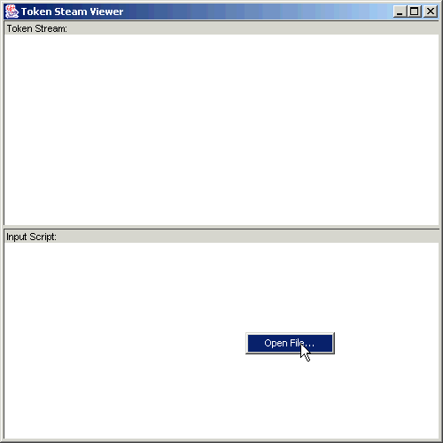
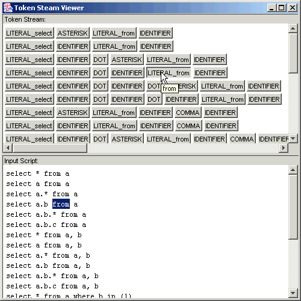

Token Stream Viewer
Author: Santhosh Kumar T
Email : santhosh@in.fiorano.com,
mr_gotu@yahoo.com
The Frame LexerFrame can be used to view the token Streams;
sample code showing how to use it:
LexerFrame lexerFrame = new LexerFrame(SQLLexer.class,
SQLTokenTypes.class);
lexerFrame.show();

right click on input script and select the input file:

now select any token in Token Steam Pane
corresponding matching text is highlight in Input Script Pane.
the Tokens in first line or input script are shown in first line of token steam
and so on..
ENJOY!!!